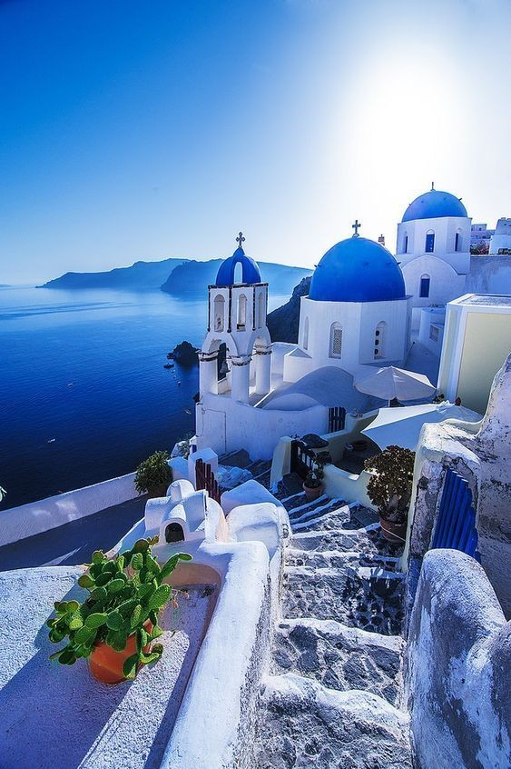

SANTORINI
Santorini est l'une des îles des cyclades, dans la mer Egée. Elle a été détruite par une éruption volcanique au XVIe siècle avant JC, qui définivement faconné ses paysages accidentés. Les maisons blanches en forme de cube de ses 2 villes principales, Fira et Oia, sont accrochées sur des falaises surplomblant une caldeira (cratère) sous-marine.Elles dominent la mer, des petites îles à l'ouest ainsi que des plages composées de galets de lave noirs, rouges et blancs.
L'île de Santorini est délicieusement différente.La nouveauté géographique en est, en partie, à l'origine. Perissa et Kamari, plages volcaniques noires très prisées, en sont d'importants attraits, tout comme sans doute Red Beach, la plus cèlèbre d'entre elles, à proximité d'Akrotiri (le lieu à visité pour les amateurs d'archéologie). L'île de Santorini, qui cerne un immense lagon des cyclades, offre un paronama éblouissant depuis les villes perchées en hauteur des vues. Vouspourrez également y découvrire une cuisine électrique, de jolies galeries d'art, une vie nocturne animée ainsi que d'excellents vins.
De la randonnée de Fira à Oia, la baignade dans des sources thermales, la visite du musée préhistorique de Thera, la contemplation du coucher du soleil depuis les falaises à la dégustation de vins grecques, les activités ne manquent pas à Santorin. Pendant votre séjour, vous pourrez aussi découvrir cette superbe île et partir en quête de ses plus belles plages grâce à une croisière en bateau. Si vous souhaitez vivre l’expérience grecque à fond, choisissez de voyager à Santorin au mois d’avril durant les fêtes de Pâques et assistez aux rites orthodoxes de la population locale.
Si Santorin regorge de lieux d’intérêts, une excursion dans ses environs vous permettra de visiter des sites moins touristiques. L’occasion de sortir des sentiers battus ou de faire une activité que vous ne devez pas manquer!
Vous pouvez par exemple randonner jusqu’au cratère du Néa Kameni, visiter les vignobles de Santorin et profiter d’une dégustation ou partir en croisière sur un catamaran au coucher du soleil. Bref, vous aurez l’embarras du choix !
Vous avez passé la majorité de vos vacances à vous prélasser sur les plus belles plages de l’île ou à visiter les sites touristiques recommandés par votre guide papier. Il vous reste un peu de temps et vous aimeriez voir des lieux qui sortent de l’ordinaire et des sentiers battus ?Parmi la multitude de choses à voir, vous pouvez partir à la découverte des caves vinicoles dispersées autour de Pyrgos, explorer le village d’Emporio et ses ruelles authentiques, marcher jusqu’au rocher Skaros pour profiter d’un panorama sur les hameaux de l’île ou encore prendre le téléphérique du vieux port jusqu’à Fira pour avoir une vue phénoménale.
